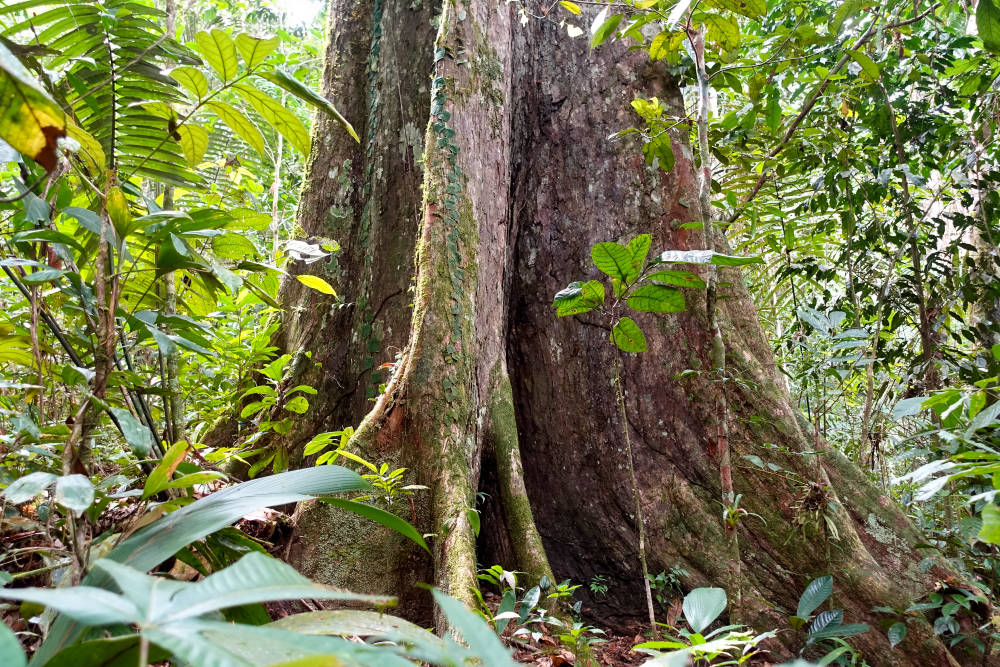

There's a moment on the jungle trail when everyone goes quiet. The guide stops, points up, and you follow the trunk with your eyes — up, and up, and up — until it disappears into the canopy far above the rest of the forest. That's the sumaúma. It's the tallest tree in the Amazon, and after all these years it's still the thing guests ask us about the most.
What Is the Sumaúma?
The sumaúma (Ceiba pentandra), also spelled samaúma and known in English as the kapok or silk-cotton tree, is the giant of the Amazon. It can reach 60 metres — roughly a 20-storey building — with a trunk several metres across and a crown that spreads out above everything else like a green umbrella. Some of them have been standing for centuries, which means the tree you're looking at was already here long before any of this had a name on a map.
Roots Like Walls
The first thing that gets people is the base. Amazonian soil is surprisingly thin, so instead of driving roots deep, the sumaúma grows enormous buttress roots — flat, wall-like fins that fan out from the trunk and can stand taller than a person. They hold the whole giant upright and steady. Walk between them and you feel like you've stepped into a room made by the forest itself.

The Mother of the Forest
For many Amazonian peoples, the sumaúma isn't just a big tree — it's the mother of the forest, the one that connects the ground to the sky. Old stories say it holds up the heavens, and that it's where spirits gather. River communities have long used the hollow between the roots as a natural drum: a few knocks and the sound carries far through the trees. Even today, cutting one down is something people avoid.
A Whole World in One Tree
A single sumaúma is its own neighbourhood. Bromeliads and orchids grow along its branches, frogs breed in the little pools they collect, bats and bees handle the flowers at night, and monkeys and toucans use the canopy as a highway. When the pods burst, they release a light, silky fibre — the kapok — that floats off on the wind and once filled pillows and life jackets around the world.
Seeing One With Us
The good news: you don't need an expedition. Our guided rainforest trail is part of every stay, and along the way your guide will show you the forest giants — the sumaúma among them — while explaining the plants, the tracks and the sounds you'd never notice on your own. Bring a camera, but be warned: no photo really captures the scale. You have to stand at the base and look up.